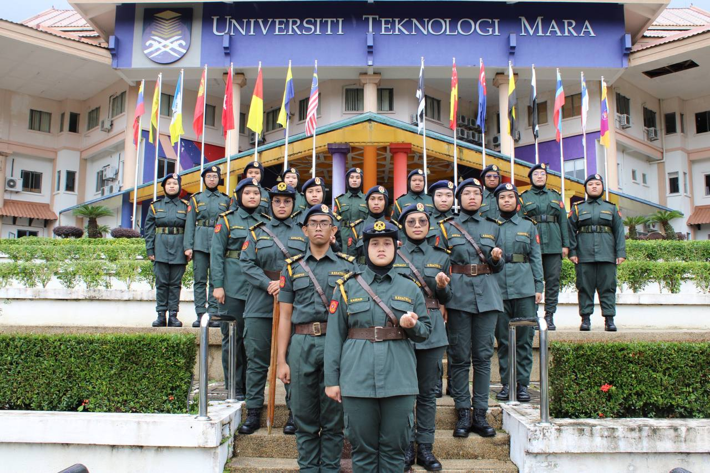

At University, I joined the Kesatria Negara Uniformed Body Association. In the association, I gained the trust of my comrades and they have elected me to be their President. I have also been involved in the Knight Commander Endurance Challenge organized by Knight Commander UiTM Arau.
Since I participated in the uniformed body, I have also been given the opportunity to be the volunteer leader for UiTM Machang in the flood relief mission and the post-flood mission last December 2022. This task was very difficult but, I was able to complete it with the help of my comrades. Without them I may not be able to continue with the given task.